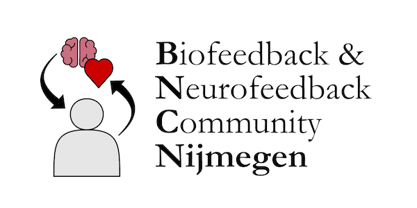

The Biofeedback & Neurofeedback Community Nijmegen (BNCNijmegen) is an initiative to bring together Bio- and Neurofeedback researchers across the Radboud campus by providing a platform for knowledge exchange and collaboration, aimed at making Nijmegen a central hub of expertise in Bio- and Neurofeedback research in the Netherlands.
For more information, please contact Florian Krause (florian.krause@donders.ru.nl)